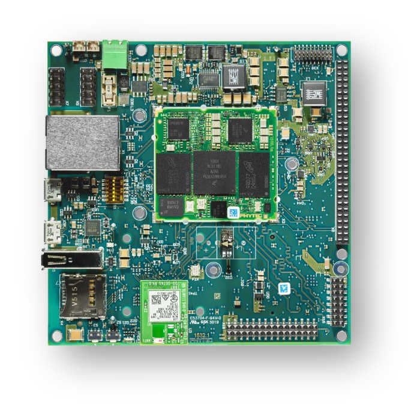

phyBOARD-Polis i.MX8M Mini
phyBOARD-Polis i.MX8M Mini
概述
phyBOARD-Polis 既可以作为 phyCORE-i.MX 8M Mini/Nano 的开发平台，也可以作为一款功能强大、符合工业标准的单板计算机，用于直接实现你的产品构想。作为开发平台，phyBOARD-Polis 可作为客户专用应用的参考设计，支持 phyCORE-i.MX 8M Mini/Nano 的软件与载板并行开发。
phyBOARD-Polis 由一个四核 Cortex-A53 集群和一个 Cortex-M4 内核组成。Zephyr OS 已移植到这两部分上运行。
作为一款功能强大的工业单板计算机（SBC），phyBOARD-Polis 配备了多种标准接口，通过标准连接器或插座/排针连接器引出；phyCORE-i.MX 8M Mini/Nano 的一些有用扩展功能，如 CAN FD、WLAN 和集成 TPM 芯片，进一步扩大了可基于 phyCORE-i.MX 8M Mini/Nano 开发的应用范围。
开发板特性：
RAM: 512MB - 4GB (LPDDR4)
存储：
4GB - 128GB eMMC
8MB - 128MB SPI NOR Flash 存储器
microSD 接口
4kB EEPROM
无线：
WiFi: 802.11 b/g/n (ac) 2.4 GHz / 5 GHz
BLE 4.2
USB:
1x USB2.0 OTG
1x USB2.0
以太网：1 个 10/100/1000BASE-T
接口： - 1 个 RS232 / RS485 - 2 个 UART - 3 个 I²C - 2 个 SPI - 最多 4 个 PWM - 4 个 SAI - 1 个 MIPI CSI-2 - 1 个 MIPI DSI-2 - 2 个 MMC/SD/SDIO - 1 个 PCIe（mini PCIE）
LEDs:
1 个状态 LED（三色 LED）
1 个调试 UART LED
调试
20 针 JTAG 连接器
用于 UART 调试的 MicroUSB，提供分别用于 A53 和 M4 的两个 COM 端口


有关该开发板的更多信息，参见 PHYTEC website。
支持的功能
phyboard_polis 开发板支持下列硬件功能。
说明
The list of supported hardware features was not generated. Run a full documentation build for the required metadata to be available.
连接与 IO
以下组件已经过测试，工作正常。
UART:
UART4 只能由 phyBOARD-Polis 的 M4 内核访问。考虑到这一点，并为了在两部分同时运行时尽量减少问题，Zephyr OS 默认配置为 M4 内核使用 UART4，Cortex-A53 集群使用 UART3。
开发板名称 |
SoM 名称 |
用法 |
|---|---|---|
RS232/485 |
UART1 |
带流控的 RS232 / RS485 |
连接到 WiFi 模块 |
UART2 |
连接 WiFi/BLE 模组的 UART |
调试 USB（A53） |
UART3 |
通过 USB 的 UART 调试控制台 |
调试 USB（M4） |
UART4 |
通过 USB 的 UART 调试控制台 |
备注
请注意，连接到 UART2 的 Wifi/BLE 模块目前还无法在 Zephyr 中使用。
警告
在版本号为 1532.1 的开发板上，UART4 没有连接到调试 USB，而是连接到 X8 排针的引脚 10（RX）和 12（TX）。
SPI:
ECSPI 默认禁用。在 phyBOARD-Polis 上，SoC 的 ECSPI3 不可用。ECSPI1 通过一个片选连接到 MCP2518 CAN 控制器。另一个设备可以通过扩展排针（X8）的引脚 5、6、7、8（CS、MOSI、MISO、SCLK）连接。ECSPI2 连接到 TPM 模块。Zephyr 目前不支持该 TPM 模块。
备注
请注意，要在 M4 内核上通过 Zephyr 使用 ECSPI1，必须先在 Linux 设备树中禁用 ECSPI1。更多信息请参阅“在 Linux 中禁用接口”一节。
LEDs:
Zephyr 已配置好三色状态 LED。led0 别名（Zephyr 标准 LED）配置为蓝色 LED。该 LED 也可以发出红光和绿光。
GPIO:
GPIO 的引脚复用采用 NXP 创建的 mimx8mm 设备树中的标准引脚复用配置，位于：
CAN:
MCP2518 通过 ECSPI1 连接。CAN 接口默认禁用，以免干扰 A53 内核上的 Linux。如果要使用 CAN 接口，需要在 Linux 设备树中禁用 ECSPI。
警告
MCP2518 驱动存在一个缺陷，导致收发器的使能引脚没有被置位。这会在尝试发送 CAN 帧时引发 ENETDOWN 错误。在 仅监听 模式下可以接收 CAN 帧。
phyBOARD-Polis 的引脚定义见：
系统时钟
M4 内核配置为以 400 MHz 时钟频率运行。
编程与调试（A53）
通过 U-Boot 启动 A53 内核
例如，可以用 Basic Synchronization 示例构建镜像：
# From the root of the zephyr repository
west build -b phyboard_polis/mimx8mm6/a53 samples/synchronization
将编译好的 zephyr.bin 加载到内存地址 0x93c00000。输出应类似如下：
u-boot=> tftp 0x93c00000 192.168.3.10:zephyr.bin
Using ethernet@30be0000 device
TFTP from server 192.168.3.10; our IP address is 192.168.3.11
Filename 'zephyr.bin'.
Load address: 0x93c000000
Loading: ##########
9.4 MiB/s
done
Bytes transferred = 49288 (c088 hex)
然后使用以下命令在 core0 上引导 Zephyr：
u-boot=> dcache off; icache flush; go 0x93c00000;
此时 A53 内核已启动并运行，控制台输出（UART3）如下：
## Starting application at 0x93C00000 ...
*** Booting Zephyr OS build v4.3.0-7560-g0dff993ff889 ***
thread_a: Hello World from cpu 0 on phyboard_polis!
thread_b: Hello World from cpu 0 on phyboard_polis!
thread_a: Hello World from cpu 0 on phyboard_polis!
thread_b: Hello World from cpu 0 on phyboard_polis!
Cortex-A53 SMP
默认的 SMP 变体运行在全部四个 Cortex-A 内核上。可以在 dts 中禁用部分 A53 内核节点，并将 CONFIG_MP_MAX_NUM_CPUS 改为 dts 中启用的 A53 内核数量。
构建 SMP 内核，例如使用 Basic Synchronization 示例：
# From the root of the zephyr repository
west build -b phyboard_polis/mimx8mm6/a53/smp samples/synchronization
运行后，控制台输出（UART3）如下：
## Starting application at 0x93C00000 ...
*** Booting Zephyr OS build v4.3.0-7560-g0dff993ff889 ***
Secondary CPU core 1 (MPID:0x1) is up
Secondary CPU core 2 (MPID:0x2) is up
Secondary CPU core 3 (MPID:0x3) is up
thread_a: Hello World from cpu 0 on phyboard_polis!
thread_b: Hello World from cpu 1 on phyboard_polis!
thread_a: Hello World from cpu 0 on phyboard_polis!
thread_b: Hello World from cpu 1 on phyboard_polis!
编程与调试（M4）
i.MX8MM 没有供 M4 内核使用的独立 Flash。因此，A53 内核必须将 M4 内核的程序加载到正确的内存地址，设置 PC 并启动处理器。这可以通过 U-Boot 完成，也可以通过 Phytec Linux BSP 的 remoteproc 完成。
由于 Phytec BSP 中的 remoteproc 只写入 TCM 内存区域，所有测试都在该内存区域中进行。
有关 Phytec BSP 中 remoteproc 的更多信息，请参阅：Remoteproc BSP
A53 和 M4 的内存映射如下：
区域 |
Cortex-A53 |
Cortex-M4（系统总线） |
Cortex-M4（代码总线） |
大小 |
|---|---|---|---|---|
OCRAM |
0x00900000-0x0093FFFF |
0x20200000-0x2023FFFF |
0x00900000-0x0093FFFF |
256KB |
TCMU |
0x00800000-0x0081FFFF |
0x20000000-0x2001FFFF |
128KB |
|
TCML |
0x007E0000-0x007FFFFF |
0x1FFE0000-0x1FFFFFFF |
128KB |
|
OCRAM_S |
0x00180000-0x00187FFF |
0x20180000-0x20187FFF |
0x00180000-0x00187FFF |
32KB |
有关存储器映射的更多信息，请参阅 i.MX 8M Applications Processor Reference Manual（第 2.1.2 和 2.1.3 节）
编译时需要选择使用哪块 RAM。该配置在 boards/phytec/phyboard_polis/phyboard_polis_mimx8mm6_m4.dts 中通过“zephyr,flash”和“zephyr,sram”属性完成。
可以对 flash 和 sram chosen 节点使用以下配置来更改所用的内存区域：
"zephyr,flash"
- &tcml_code
- &ocram_code
- &ocram_s_code
"zephyr,sram"
- &tcmu_sys
- &ocram_sys
- &ocram_s_sys
Zephyr 默认配置为使用 TCM 内存区域，并禁用 CONFIG_XIP。如果要使用 OCRAM 内存区域，必须启用 CONFIG_XIP。
通过 U-Boot 启动 M4 内核
将编译好的 zephyr.bin 加载到内存地址 0x4800000。输出应类似如下：
u-boot=> tftp 0x48000000 192.168.3.10:zephyr.bin
Using ethernet@30be0000 device
TFTP from server 192.168.3.10; our IP address is 192.168.3.11
Filename 'zephyr.bin'.
Load address: 0x48000000
Loading: ##
2 KiB/s
done
Bytes transferred = 27240 (6a68 hex)
由于无法直接加载到 TCM 内存区域，需要复制二进制文件。最后一个参数是文件大小（字节），可以从上一条命令的输出中复制。
u-boot=> cp.b 0x48000000 0x7e0000 27240
最后，在正确的内存地址启动 M4 内核：
u-boot=> bootaux 0x7e0000
## Starting auxiliary core stack = 0x20003A58, pc = 0x1FFE1905...
通过 remoteproc 启动 M4 内核
将 zephyr.elf 复制到目标板的 /lib/firmware。未来的 BSP 版本中可能会包含一个 Zephyr 示例。
备注
要使用 remoteproc，需要在 /boot/bootenv.txt 中该行末尾添加 imx8mm-phycore-rpmsg.dtbo，然后重启目标板。
警告
Remoteproc 只从 /lib/firmware 目录读取固件文件！如果尝试从其他位置加载二进制文件，将会出现意外错误！
使用以下命令加载并启动固件：
target$ echo /lib/firmware/zephyr.elf > /sys/class/remoteproc/remoteproc0/firmware
target$ echo start > /sys/class/remoteproc/remoteproc0/state
[ 90.700611] remoteproc remoteproc0: powering up imx-rproc
[ 90.706114] remoteproc remoteproc0: Direct firmware load for /lib/firmware/zephyr.elf failed w2
[ 90.716571] remoteproc remoteproc0: Falling back to sysfs fallback for: /lib/firmware/zephyr.elf
[ 90.739280] remoteproc remoteproc0: Booting fw image /lib/firmware/zephyr.elf, size 599356
[ 90.804448] remoteproc remoteproc0: remote processor imx-rproc is now up
M4 核现已启动并运行。可以在 UART4 上看到 Zephyr 的输出。
调试
phyBOARD-Polis 可以使用 JTAG 调试器调试。最简单的方法是使用 SEGGER JLink 调试器和 Phytec 的 PEB-EVAL-01 扩展板，该扩展板可以直接连接到 JLink。JLink 软件包见：JLink Software

为了高效调试，应使用多个终端：
（也可以使用 west debug）
连接好所有设备并使用 west 构建后，在之前构建的程序目录下使用以下命令启动调试服务器：
host$ west debugserver
West 会自动通过 JLink 连接到目标，并保持调试服务器运行。
使用另一个终端启动 gdb，连接到目标并将 Zephyr 加载到目标上：
host$ gdb-multiarch build/zephyr/zephyr.elf -tui
(gdb) targ rem :2331
Remote debugging using :2331
0x1ffe0008 in _vector_table ()
(gdb) mon halt
(gdb) mon reset
(gdb) c
Continuing.
可以使用标准的 gdb 方法调试程序。
在 Linux 中禁用接口
如果在 Linux 运行于 A53 内核的同时在 M4 内核上使用 Zephyr，建议禁用 M4 内核所用的接口，以避免冲突。较简单的接口（例如 GPIO）可以在两个内核上同时启用。但即便如此，仍要注意可能出现冲突。
对于 SPI 等较复杂的接口，必须在 Linux 设备树中禁用，否则 Linux 很可能会因 panic 而崩溃，导致 SoC 复位。例如，在 Linux 中禁用 ECSPI1，以便在 M4 内核上通过 Zephyr 使用它：
新建一个名为
disable_spi.dts的文件，内容如下：
/dts-v1/; /plugin/; / { fragment@0 { target = <&ecspi1>; __overlay__ { status = "disabled"; }; }; };
使用 dtc 编译器将该文件编译为设备树二进制文件（blob）：
$ dtc -@ -I dts -O dtb -o imx8mm-phyboard-polis-disable-spi.dtbo disable_spi.dts;
将编译好的文件复制到目标板的 boot 分区。
在
/boot/bootenv.txt文件中该行末尾添加该文件名。重启目标板，此时 SPI 接口已在 Linux 中禁用。